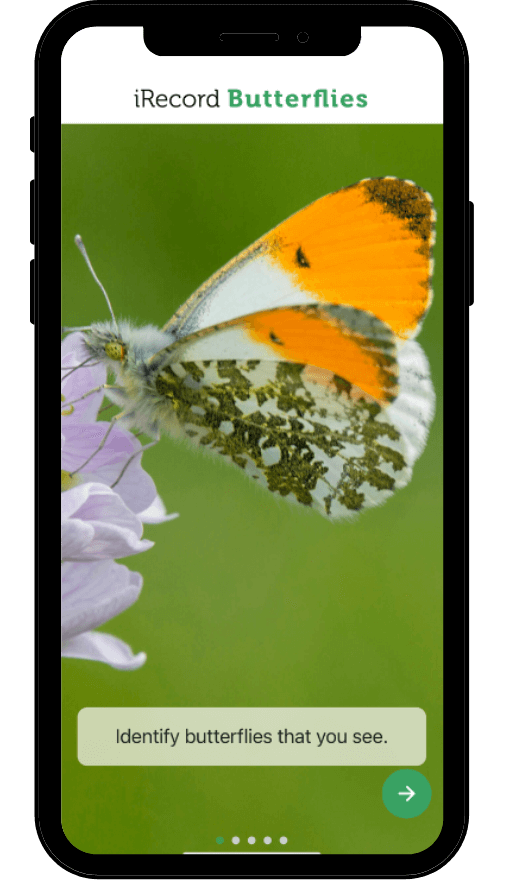
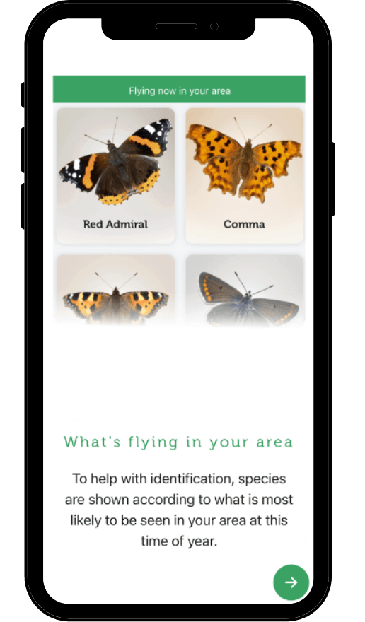

Essential Mobile App for Recording Butterflies
We know that climate change is making butterflies emerge earlier in spring and some are spreading to new parts of the UK. We need you to tell us where and when you saw them..

iRecord Butterflies mobile app
Butterflies are in trouble. A third of UK species are threatened and three-quarters are in decline. Butterfly recording is the foundation for protecting these beautiful creatures. The iRecord Butterflies app helps you to identify the butterflies that you see, but also uses your sightings to help save butterflies.
App Features
iRecord App enables you to get involved with biological recording. Contribute your species sightings with GPS acquired coordinates, descriptions and other information, thus providing scientists with important new biodiversity information that contributes to nature conservation, planning, research and education.
Works fully offline
Even with a signal you will still be able to record the butterflies you see.
Record all the wildlife you see - supports all UK species
Records can help to establish the distribution and size of populations, and regular recording may enable us to detect changes over time.
Add new records with minimal effort
The iRecord app is so easy to use you will be able to record your sighting with just a few clicks.

Capture species lists
Contribute your species sightings with GPS acquired coordinates.
Benefit from automatic data checks and review by experts
Automatic checks will be applied to your observations to help spot potential errors, and experts can review your sightings.
Share your sightings with the recording community
Let other butterfly and conservation enthusiasts see your sightings.
Find out how you can help Cornwall's butterflies.


Identify & Record
Spotted a butterfly but not sure what it is? Our handy identification section will help you find out.
Read More